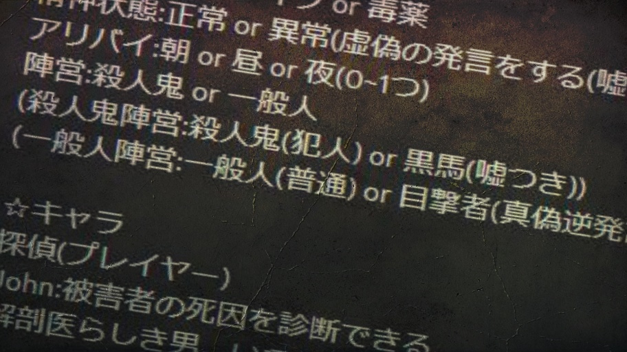

Konoeのベース仕様ノートが公開。

昨年末から開発が始まっている一人人狼ゲームKonoeの土台となる設定が載ったベース仕様ノートが、元旦にチームIRRELEVANTからパブリックで公開された。
公開されているノートには、推理に必要な情報の種類やキャラクター名、その能力と背景などが掲載されている。
数多く存在する人狼ゲームの中でも珍しい一人プレイ向けということで、多数の界隈から注目を集めている。
【メディア】Konoeベース仕様ノート V-b.01
死因:刺殺 or 毒殺
死亡時刻:朝 or 昼 or 夜(うち2つ)
☆生存者の特性
犯行可能凶器:ナイフ
or 毒薬
精神状態:正常 or 異常(虚偽の発言をする(嘘では無い))
アリバイ:朝
or 昼 or 夜(0~1つ)
陣営:殺人鬼 or 一般人
(殺人鬼陣営:殺人鬼(犯人)
or 黒馬(嘘つき))
(一般人陣営:一般人(普通) or 目撃者(真偽逆発言) or
臆病者(発言不可))
☆キャラ 探偵(プレイヤー)
John:被害者の死因を診断できる
解剖医らしき男。いつでも白衣をまとい彼は毒にも薬にもなると言う液体の入った瓶を持ち歩いている。
Poirot:死亡時刻を凡そ特定できる
元警官と言う男。古びたロングコートがお気に入りで、護身用のナイフを彼は欠かさないらしい。
Adams:生存者一名の精神状態を診断できる
自称精神科医の男。ピエロのような見た目で精神を安定させるためだと言う錠剤を見せてくれた。
George:生存者一名の陣営を特定できる
元占い師だったと言う彼は話す相手の背景を知っていたかのように読み取れる。手品用の小さなナイフは親の形見だとか。
Melania:生存者一名が嘘をついたかわかる
教師をしていると言う彼女は人の嘘を見抜けるらしい。派手でお世辞にもお洒落とは言えない服の隙間からは薬瓶が見える。
Oda:臆病者の場合のみ死亡する
日系の顔立ちが目立つ彼は一見気が強そうだが常に周りに怯えている。和服を身に纏う彼の懐には小刀が入っている。
Zodiac:目撃者の場合のみ死亡する
まだ学生だと言う青年。ショックには耐えられない性格で精神安定剤だと言う薬を持ち歩いていると彼は言う。
V-b.01
Konoe beta version development has begun.

12月上旬、チームIRRELEVANTが一人向け人狼ゲームKonoe（元：一人人狼(仮)）の開発開始を発表した。チームIRRELEVANTの開発するゲームとしては一作目であり、立案のリーク情報などから人狼ゲームファンからは注目が集まっている。
Konoeベータ版のリリースは来年年内を予定。